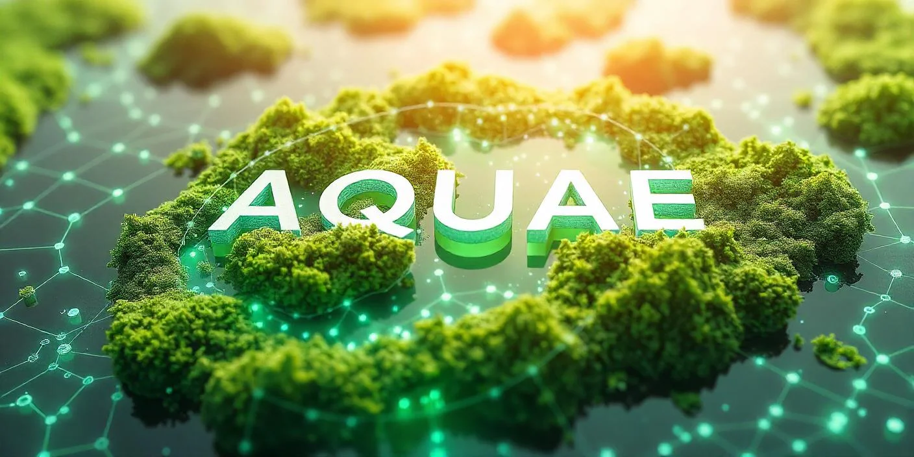

1. Gross Oxygen Productivity
Assesses the oxygen production associated with photosynthetic activity and ecosystem productivity.
Assessing, quantifying and valuing ecosystem services through field-based ecological measurements and Monitoring, Recording and Verification (MRV).
The AQUAE Labs Ecosystem Conservation Index (ALCI) is a scientific framework for assessing, quantifying and valuing ecosystem services through field-based ecological measurements and Monitoring, Recording and Verification (MRV).
ALCI evaluates key ecological functions and indicators, including biomass, oxygen production, water purification, cooling effects, soil properties and biodiversity. It aims to connect measured ecosystem conditions and performance with structured valuation methodologies and environmental asset development.
Rather than treating nature solely as a conservation cost, ALCI seeks to provide a framework through which ecological services can be assessed and their potential value communicated to institutions, project developers, investors and conservation stakeholders.

ALCI considers any ecosystem as a living, maturing continuum whose components vary in mass and value—consolidating and valuing measured outputs across seven core ecosystem-service domains.
ALCI assesses seven key ecosystem-service domains to evaluate the ecological productivity and conservation value of natural ecosystems. Click any node on the heptagon or any domain card below to inspect its role.
Assesses the oxygen production associated with photosynthetic activity and ecosystem productivity.
Assesses the oxygen production associated with photosynthetic activity and ecosystem productivity.
Evaluates the contribution of ecosystems to natural water purification processes.
Measures woody above-ground biomass as an indicator of ecosystem productivity and its potential as a source of renewable energy.
Assesses the contribution of vegetation and ecological succession to local temperature regulation and landscape cooling.
Evaluates the ecological value of living soil, including its organic matter and role in supporting soil health and sustainable agriculture.
Assesses the capacity of soil to retain water and support ecosystem functions and local hydrological processes.
Evaluates biodiversity through species richness and Relative Species Conservation Value (RSCV), recognising the conservation importance of species within an ecosystem.
ALCI follows a structured process to assess ecosystem conditions, measure ecological services and support the valuation of natural capital.
The process begins with identifying and profiling the site, including its habitat type, ecological characteristics, land conditions and stages of ecological succession.
Ecological data are collected through field surveys, observations and measurements, covering biomass, ecosystem services, soil properties and biodiversity.
Collected data are documented and assessed through the MRV framework to establish baseline conditions and monitor changes in ecosystem performance.
Ecological indicators and defined calculation methods are used to assess ecosystem services and determine their associated values.
Assessed ecological values provide the basis for structuring ALCI Assets, subject to the applicable methodology and verification requirements.
AQUAEChain is designed to support digital recording, tracking and traceability of ecological data and associated environmental assets.
ALCI aims to establish a structured connection between the ecological functions of natural landscapes, their assessed value and the digital records associated with environmental assets. The credibility of this process depends on reliable field data, transparent methodologies, appropriate verification and clear communication of assessment limitations.